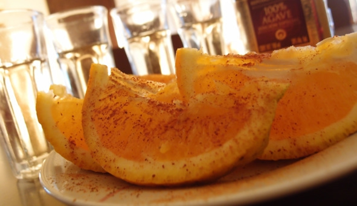

О культуре пития .. Как пить текилу.


Для мексиканцев не столь важно, как пить текилу, лишь бы в хорошей компании, но в западной культуре это целый ритуал, требующий определенных знаний и навыков. Текилу можно пить следующими способами:
1. Классический (соль, лайм, текила). Способ популярен в Европе и США, но многие мексиканцы о нем даже не знают. На внешнюю сторону ладони между большим и указательным пальцами насыпают немного соли. Далее этими же пальцами берут дольку лайма (можно обычного лимона). Затем слизывают с ладони соль, выпивают рюмку текилы и закусывают долькой лимона. Схема называется «Лизни! Опрокинь! Кусни!».
Также существует более экстравагантная версия: соль слизывают не с ладони, а с частей тела любимого человека, например, с плеча. В этот момент партнер держит лимон в своих зубах.
2. С апельсином и корицей. Процедура распития такая же, как и в первом случае, только лимон заменяют долькой апельсина, а щепотку соли – молотой корицей. Этот способ очень популярен в Германии, где ценится мягкий вкус спиртного. Еще закусывать текилу апельсином и корицей нравится женщинам.

Апельсин с корицей – оригинальная закуска к текиле
3. В чистом виде под закуску. Текилу можно пить комнатной температуры из стопок или рюмок. Исторически сложилось так, что единственно правильной закуской считается лимон с солью. На самом деле ассортимент закусок гораздо шире.
Легкие закуски подходят лишь в том случае, если планируется выпить не более 150 мл текилы на человека. Кроме уже упомянутого апельсина закусывать текилу можно ананасом или грейпфрутом.
Выбор холодных закусок достаточно широк, но текила не сочетается с десертами и другой сладкой пищей. Подходят мягкие сыры, мясная нарезка, шампиньоны и оливки. Все эти блюда желательно приправлять острыми специями или соусами. Например, мексиканцы закусывают текилу своим национальным соусом сальса. Рецепт: порезать мелкими кусочками помидоры, черные оливки, лук, чеснок, сыр и перец чили. Взбить ингредиенты в блендере, добавить соль, перец, лимонный сок, заправить сальсу оливковым маслом. Пропорции подбирают индивидуально в зависимости от желаемой остроты. Соус подают в небольших тарелочках. Его можно сочетать с мясными блюдами или просто намазывать на хлеб.
В ресторанах фирменной закуской под текилу считается салат из креветок и шампиньонов. Для его приготовления достаточно нарезать кусочками сырые шампиньоны и смочить их лимонным соком. Далее кубиками нарезать ананасы и вареные креветки. Затем грибы, ананасы и креветки уложить слоями. На последнем этапе заправить салат соусом из майонеза, сметаны, черного перца и посыпать зеленью.
Еще можно приготовить буррито – мексиканское блюдо, напоминающее лаваш. В хлебную лепешку заворачивают мясную или овощную начинку. Вместе с текилой хорошо зарекомендовал себя следующий состав начинки: мясо, фасоль, кукуруза, лук, чеснок и перец чили. Все это обжаривают вместе со специями и солью, затем заворачивают в лепешку лаваша.
Оптимальным вариантом для длительного застолья к текиле являются горячие закуски. Можно ставить на стол картофельное пюре, жареное мясо, куриное филе и другие блюда, которые принято подавать под водку. Единственный недостаток – в сочетании с горячими сытными блюдами вкус текилы теряется. Поэтому чтобы продегустировать напиток, первые несколько стопок можно закусить лимоном (лаймом), а потом перейти к холодным и горячим закускам.
4. Разбавляя другими напитками. Текилу не принято разбавлять (за исключением коктейлей), так как теряется характерный вкус. Но любителей слабоалкогольных напитков это не останавливает. Для понижения градуса они экспериментируют с добавлением соков и газировок.
Текилу разбавляют томатным, апельсиновым, лимонным и яблочным соком. Серебряную (прозрачную) текилу лучше смешивать с апельсиновым или лимонным свежевыжатым соком, золотую – с томатным или яблочным (из зеленого яблока). Оптимальные пропорции – 1:2 или 1:3 (одна часть текилы на 2—3 части выбранного сока). Также серебряную текилу можно запивать «Спрайтом» или тоником, золотая более-менее сочетается с колой.